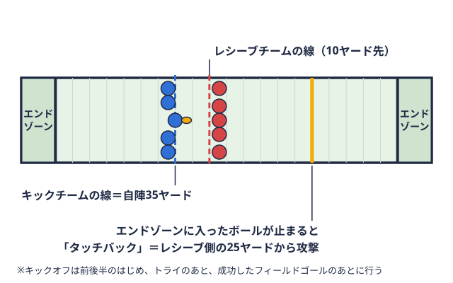

トレーニング 2026-11-20
アメフトの試合前の緊張対策｜部員が試合1時間前にやっていることと選び方
試合の日が近づくと、「頭が真っ白になりそう」「ミスしたらどうしよう」といった考えが浮かぶ場合があります。この記事では、大学運動部員を対象にした調査で、試合1時間前の選手が何を考え、何をして気持ちを整えているのかを紹介します。そのうえで、アメフト部員が試合当日の流れに組み込みやすい方法と、自分に合うものを選ぶ手順を整理します。
アメフトに限定した試合前メンタルの調査は、今回確認した範囲では見つかりませんでした。そのため、ここで使うデータは競技種目を限定しない運動部員の調査であり、アメフト部員にそのまま当てはまるとは限りません。「他の競技の部員はこうしていた」という参考情報として読み、所属チームの方針やトレーナー・指導者の助言がある場合はそちらを優先してください。
結論：緊張は消すものではなく、扱い方を事前に決めておくもの
最初に要点をまとめます。
- 緊張や不安は、試合前の運動部員によく見られる反応です。調査では、試合1時間前の思考として最も多かったのが「緊張」「不安」などの自動思考でした。
- 対処として最も多く挙げられたのは、イメージ・集中・深呼吸などの心理的な準備でした。次いで、ウォーミングアップなどの身体的な準備、仲間との会話が続きます。
- 緊張を「落ち着かせる」のではなく「ワクワクしている」と捉え直す方法を比較した研究もあります。ただし、対象はカラオケ・スピーチ・数学の課題で、アメフトの試合ではありません。
- 対処の中身は人によって大きく分かれていました。試合当日にいきなり試すのではなく、練習や練習試合で試しておくほうが選びやすくなると編集部は考えます。
試合1時間前、運動部員は何を考えているのか
法政大学スポーツ研究センター紀要42号（2024年3月31日）に掲載された、佐藤優希氏・町田和梨氏・荒井弘和氏の研究を見てみます。調査の概要は次のとおりです。
- 対象者：運動部（サークルは除く）に所属する大学・短期大学の1〜3年生309名（平均年齢20.04歳、男子155名・女子154名）
- 方法：2012年12月にインターネット調査を実施し、「試合の1時間前にどのようなことを感じたか・考えたか」を自由に記述してもらい、グループ分けして整理
- 回答数：試合1時間前の思考が357件、その思考に対する対処が364件
論文は、調査がオンラインで行われたためバイアスが生じた可能性があること、試合の重要度（引退試合や初出場など）を考慮していないことを限界として挙げています。また、調査は競技種目を限定しておらず、データも2012年のものです。この点を踏まえて読んでください。
試合1時間前の思考の内訳
思考の回答357件は、次の7つの大分類にまとめられています。
| 大分類 | 回答数 | 主な内容（論文の小分類） |
|---|---|---|
| 自動思考 | 111 | 緊張（65）、不安（43）、逃避（2）、プレッシャー（1） |
| 積極的思考 | 104 | 勝利意欲（38）、実力発揮（34）、楽しむ・気楽（19）、自信（8）、試合への期待（5） |
| 心理的準備 | 56 | イメージ（21）、自己コントロール（9）、無心（7）、リラックス（6）、普段通り（5）、開き直り（5）、集中（3） |
| プレー面 | 30 | 試合への準備（14）、分析（13）、自分のプレー（3） |
| チーム内のコミュニケーション | 18 | 貢献・サポート（15）、士気の向上（3） |
| 体調 | 7 | 身体の調子（7） |
| その他 | 31 | 身体的準備、責任感、設営の確認など |
最も多かったのは「緊張」「不安」などの自動思考ですが、「勝ちたい」「練習の成果を見せたい」「楽しみたい」といった積極的な思考も、ほぼ同じくらい挙げられています。論文はこの点について、緊張や不安だけでなく、前向きな気持ちで試合に臨む選手も同じくらい存在することが分かったと述べています。
つまり、試合前に緊張を感じていても不自然とはいえず、同時に前向きな気持ちを持っている人も少なくありません。緊張しているのは自分だけではないかもしれない、と考えるための材料になります。
回答の例
論文には、「緊張して頭が真っ白になりそうだった」「周りの部員たちがベストを出している中、自分がいい結果を出せるかとても不安になる」といった回答が載っています。一方で、「今までの練習成果を見せるときが来た」「楽しんでやりたいな」といった回答もあります。同じ試合前の1時間でも、選手によって、あるいは同じ選手でも試合によって、考えていることは異なります。
試合1時間前に実際にやっていた対処
次に、その思考に対してどんな対処をしていたかです。対処の回答364件は、8つの大分類にまとめられています。
| 大分類 | 回答数 | 主な内容（論文の小分類） |
|---|---|---|
| 心理的準備 | 112 | イメージ（34）、集中（18）、深呼吸（16）、リラックス（9）、無心（9）、いつも通り（9）、練習の想起（7） |
| 身体的準備 | 85 | ウォーミングアップ（38）、練習（23）、ストレッチ（20）、動作確認（4） |
| チーム内のコミュニケーション | 46 | コミュニケーション（40）、応援・サポート（6） |
| サイキングアップ | 29 | 音楽（24）、声出し（5） |
| プレー面 | 23 | 相手の分析（6）、プレーの試行錯誤（5）、試合観戦（4）、道具の整備（4） |
| 体調面 | 16 | 栄養・休養（14）、トイレ（2） |
| プラス思考 | 13 | 意気込み（7）、楽しみ（6） |
| その他 | 40 | 何もしない（11）、緊張（7）など |
最も多かったのは心理的な準備で、その中でもイメージが最多でした。論文は、緊張や不安への対処にメンタルトレーニングの技法が多く使われていると述べる一方で、選手本人がそれを技法として理解して行っているとは限らないとも書いています。
注目したいのは、メンタルトレーニングの技法とはいえない方法も多く挙げられている点です。仲間とのおしゃべり、応援やサポート、相手の分析、道具の手入れなどです。論文は、他者との関わりや、プレーに関わる要素を万全にしておくことで不安要素が減り、気持ちを整えることにつながっている可能性があると考察しています。因果関係が確認されたわけではなく、あくまで可能性として述べられている点に注意が必要です。
アメフトの試合当日に組み込みやすい方法
ここからは、調査で挙がった方法を、アメフト部員の試合当日の流れに当てはめて考えます。チームの集合時間やアップの時間割はそれぞれ決まっているため、「自分の時間に何を入れられるか」という視点で読んでください。
1. ウォーミングアップに動作確認を含める
身体的準備はウォーミングアップ（38件）、練習（23件）、ストレッチ（20件）が中心でした。アメフトの場合、チーム全体のアップ以外に、自分のポジションの動きを確認する時間があるかもしれません。アップの具体的な内容はアメフトのウォームアップとダイナミックストレッチにまとめています。動作確認は4件と少数でしたが、自分の動きの確認が気持ちの整理になるかどうかは、人によって差があると考えられます。
2. イメージを使う
イメージは対処の中で最も多い小分類（34件）でした。「勝つことをイメージし続けた」「試合での動きをイメージしていた」といった回答があります。論文はイメージを、緊張や不安への対処に使われるメンタルトレーニングの技法のひとつとして位置づけています。
アメフトでは、自分が担当するプレーの最初の動きを思い浮かべる、といった使い方が考えられます。映像で自分のプレーを確認する習慣がある場合は、フィルムスタディの見方で触れた「自分の役割から確認する」やり方と組み合わせると、イメージの材料が具体的になります。
3. 深呼吸を使う
深呼吸は16件でした。手軽で、短時間で気持ちを落ち着けるのに向く方法とされています。一方で、スポーツナビの「認知的再評価」を扱ったコラム（2022年11月11日）は、深呼吸は長時間続けるのが難しいという点を挙げています。キックオフ試合開始やタッチダウンの後などに、ボールを蹴って始めるプレー。蹴る側は自陣35ヤードから蹴る。 
4. 緊張を「ワクワク」と捉え直す
上記コラムが紹介しているのが、認知的再評価です。心拍数の上昇などの身体反応を「落ち着かせるべきもの」ではなく「本番に向けて身体が準備している」と解釈し直す方法です。根拠として紹介されているのは、Brooks（2014）の研究です。この研究は、カラオケ、人前での発表、数学の課題などを使って、不安を落ち着かせようとするグループと、「ワクワクしている」と捉え直すグループを比べています。報告では、捉え直したグループのほうが興奮を感じやすく、パフォーマンスも良かったとされています。
ただし、これはアメフトの試合ではなく、実験室や課題の場面での結果です。アメフトのような接触を伴う競技で同じ効果が出るかは、この研究からは分かりません。試してみる価値はあるものの、効果を約束する方法ではないと考えてください。
5. 仲間と話す・声を出す
チーム内のコミュニケーションは46件、サイキングアップ（音楽・声出し）は29件でした。「チームメイトと何でもない会話をして、笑いあった」という回答もあります。アメフトは出場人数が多い競技のため、集合場所やサイドラインフィールドの長い辺にある境界線。ボールを持った選手がここに触れるか出ると、その場でプレーが止まる。 用語辞典で見るで会話が生まれやすい環境にあります。ただし、一人で過ごして落ち着く人もいます。論文でも「部員と話さずなるべく一人で過ごす」という回答が1件あり、どちらが良いかは人によって異なります。
用語辞典で見るで会話が生まれやすい環境にあります。ただし、一人で過ごして落ち着く人もいます。論文でも「部員と話さずなるべく一人で過ごす」という回答が1件あり、どちらが良いかは人によって異なります。
6. 体調と食事を整える
体調面の対処では、栄養・休養が14件でした。試合当日の食事や補給は、試合当日の食事と補食の記事で整理しています。空腹や睡眠不足が気持ちに影響する場合もあるため、緊張対策と食事・睡眠は別の問題として切り離さず、あわせて考えるほうが整理しやすくなります。睡眠については睡眠とリカバリーも参考になります。
自分に合う方法を選ぶ手順
調査では対処の中身が人によって大きく分かれており、特定の方法だけが多数を占めたわけではありません。ここでは、そのばらつきを踏まえた編集部の進め方の例を示します（研究で効果が確認された手順ではありません）。
- 候補を2つ選ぶ：イメージ、深呼吸、捉え直し、仲間との会話などから、取り組みやすそうなものを2つだけ選びます。多くの方法を同時に試すと、何が合ったのか分からなくなります。
- 練習や練習試合で試す：公式戦の本番ではなく、気持ちが張る場面の少ない日に試します。
- 試した後に一言メモする：「やった方法」「そのときの気持ち」「やってみてどうだったか」だけを書きます。
- 続けるものを1つ決める：合わなかった方法は無理に続けません。合うものがなければ、別の候補に替えます。
- 試合当日の流れに入れる：集合からキックオフまでのどこで行うかを決めておきます。
「何もしない」という回答が11件あったことも、論文には記録されています。方法を持たなければいけないわけではなく、自分にとって負担にならない範囲で選べば十分です。
緊張を強く感じるときの注意
論文の回答には、「緊張で頭が真っ白になりそう」「出たくない」といった強い緊張や不安を示すものも含まれています。論文は、こうした場合に対処法を身につけておくことの重要性を述べています。試合前の緊張が日常生活にも影響するほど強い場合や、毎回続く場合は、一人で抱え込まず、チームのトレーナーや指導者、大学の相談窓口に相談してください。日本スポーツ心理学会が資格を認定する「スポーツメンタルトレーニング指導士」のような専門家もいますが、所属大学や地域によって利用できるかは異なります。
試合の日程を確認して準備に使う
試合前の準備は、いつ・どこで・誰と試合をするかが決まってこそ具体的になります。関東学生リーグのTOP8・BIG8の試合日程と結果は、本サイトのTOP8 日程・結果とBIG8 日程・結果で確認できます。相手校の今季の戦績は、TOP8 チーム一覧やBIG8 チーム一覧からチームページへ進むと見られます。
調査では、相手の分析（6件）や道具の整備（4件）といった「プレーに関わる準備」も、気持ちを整える対処として挙がっていました。論文は、プレーに関わる要素を万全にしておくことで不安要素が減る可能性を述べています。日程と相手を確認して、何を準備するかを具体的にしておくことは、緊張への対処にもなり得ます。年間の流れはアメフトの年間スケジュールも参照してください。
よくある疑問
緊張しないようにするべきですか
論文では、緊張や不安は試合前の思考として最も多く挙げられており、特殊な反応ではないことが分かります。「緊張しない」ことを目標にするより、緊張を感じたときにどうするかを決めておくほうが、現実的な準備につながります。
負けたくない気持ちが強すぎて緊張します
論文には「勝ちたいという気持ちが強すぎて緊張につながった」という回答もあります。勝利意欲は積極的な思考として最も多く挙げられた項目のひとつでもあり、気持ちの強さ自体が悪いわけではありません。強すぎると感じる場合は、「今日できること」に目を向ける方法（例：最初のプレーでやることを1つ決める）が選択肢になります。
先輩や同期の方法をそのまま真似してよいですか
試してみること自体は問題ありませんが、合うかどうかは別です。調査でも対処は人によって大きく異なっていました。真似するときも、練習で試し、自分に合うかを確認してから本番に使うと安心です。
まとめ
大学運動部員309名の調査では、試合1時間前に最も多かった思考は緊張や不安でしたが、前向きな思考も同程度に挙げられていました。対処はイメージ、ウォーミングアップ、深呼吸、仲間との会話、音楽、相手の分析など多様で、特定の方法が正解というわけではありません。まず2つの方法を選び、練習で試して、自分に合うものを試合当日の流れに入れる、という順で進めるのが現実的です。調査は競技を限定せず、データも2012年のものなので、アメフトに当てはまるかは確認されていません。参考情報として、自分とチームの状況に合わせて使ってください。
出典
- 佐藤優希・町田和梨・荒井弘和「試合前のアスリートにおける思考と思考に対するコーピング」法政大学スポーツ研究センター紀要42号、75-81頁（2024年3月31日）: https://doi.org/10.15002/00030571
- Brooks, A. W.「Get excited: reappraising pre-performance anxiety as excitement」Journal of Experimental Psychology: General 143(3), 1144-1158（2014）: https://pubmed.ncbi.nlm.nih.gov/24364682/
- スポーツナビ（Doスポーツ）「アスリートの不安・緊張対策に有効な『認知的再評価』リアプレイザルとは？」（2022年11月11日）: https://sports.yahoo.co.jp/column/detail/202211110022-spnavido
この部活・競技を応援したい方へ
協賛・応援はこちらから。
取材してほしい部活を募集中
あなたの部活・チームを取材してほしい方はこちらから。
部活を続けながら、就活も進めたい方へ
体育会の学生のための就活相談です。無料で、メールアドレス・学年・所属の入力だけで始められます。